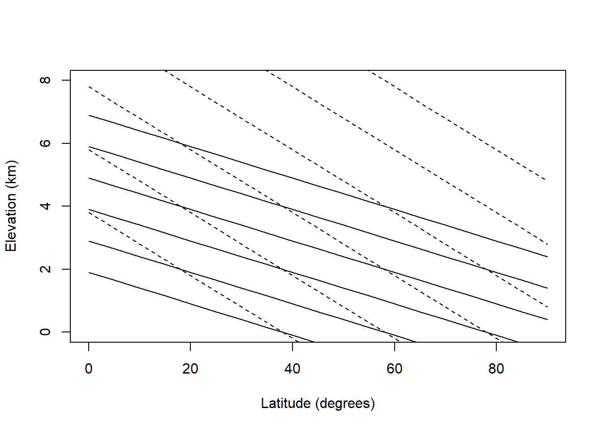

6.5 PROBLEM SOLUTIONS
At the earth’s surface incoming = outgoing or 105 + 24 + 17 + 6 = 101 + 18 + 23 + 10. For the earth’s atmosphere incoming = outgoing or 101 + 23 + 10 + 19 = 105 + 48.
From the adiabatic lapse rate calculation, we know that the mean annual temperature will decrease 10°C/km. We might expect then that similar communities will be found on the same isotherm (convergence), if other factors such as water availability are similar (Fig 6.1). Tropical mountain vegetation therefore may look like temperate forests and temperate alpine meadows will resemble tundra communities. (See Bliss (1956) for comparison of last two communities.) Table 1 shows the mean and mean annual range in temperature for the northern and southern hemisphere (Miller and Thompson 1970)
Table 1. Mean annual temperature and temperature range, and their variation with latitude.
| Mean temperature (°F) | Mean annual range (°F) | |||||||
|---|---|---|---|---|---|---|---|---|
| Latitude (deg.) | Northern hemisphere | °C | Southern hemisphere | °C | Northern hemi-sphere | °C | Southern hemisphere | °C |
| 90-80 | -8 | -22 | -5 | -21 | 63 | 35.5 | 54 | 30 |
| 80-70 | 13 | -13.5 | 10 | -12.5 | 60 | 34 | 57 | 32 |
| 70-60 | 30 | -1 | 27 | -3.5 | 62 | 35 | 30 | 17 |
| 60-50 | 41 | 5 | 42 | 4.5 | 49 | 27.5 | 14 | 8 |
| 50-40 | 57 | 14 | 53 | 11.5 | 39 | 22 | 11 | 6 |
| 40-30 | 68 | 20 | 65 | 18.5 | 29 | 16 | 12 | 6.5 |
| 30-20 | 78 | 25.5 | 73 | 16 | 9 | 12 | 6.5 | |
| 20-10 | 80 | 26.5 | 78 | 25 | 7 | 4 | 6 | 3.3 |
| 10-0 | 79 | 26 | 79 | 26 | 2 | 1 | 3 | 1.7 |
lats= seq(0,90,5)
elevs= 0:8
#temp
#dry adiabatic lapse rate
#temp=26-0.5*(lat-26)-lapse*elev
#elevation for given temperature
#elev= (26-0.5*(lat-26) -temp)/lapse
el=function(lat, temp,lapse) (26-0.5*(lat-26) -temp)/lapse
#plot out isoclines for various temperatures
#dry lapse
plot(lats,el(lats,20,10), type="l", ylim=c(0,8),
xlab="Latitude (degrees)", ylab="Elevation (km)")
points(lats,el(lats,10,10), type="l")
points(lats,el(lats,0,10), type="l")
points(lats,el(lats,-10,10), type="l")
points(lats,el(lats,-20,10), type="l")
points(lats,el(lats,-30,10), type="l")
points(lats,el(lats,20,5), type="l", lty="dashed")
points(lats,el(lats,10,5), type="l", lty="dashed")
points(lats,el(lats,0,5), type="l", lty="dashed")
points(lats,el(lats,-10,5), type="l", lty="dashed")
points(lats,el(lats,-20,5), type="l", lty="dashed")
points(lats,el(lats,-30,5), type="l", lty="dashed")
Because the change in temperature with elevation is affected by turbulence and heating of the surface as well as the lapse rate, the change in temperature as a function of elevation averages about 6°C/km. Using this fact, isotherms for elevation and latitudinal changes are replotted in Fig. 6.2 for the northern hemisphere. The effect of the mean annual range in temperature will be to increase the seasonality of the community. According to Fig. 6.2 then a community at 2,500 m and 20° latitude would have the same mean annual temperature as a community at sea level and 60°C latitude (0°C) but at 65° latitude the temperature variation would be 3.5 times larger. See Carter and Mather (1966) for a review of climate classifications.
Figure 6.8: Isotherms in degrees Celsius for elevation vs. latitude. The mean annual temperature at any elevation is calculated assuming a dry adiabatic lapse rate. Mean annual temperature at growund level are taken from Miller and Thompson 1970.
- system: surroundings
moose in conifer bed: ground, conifer trees (during the day solar radiation)
cactus plant: wind, sun, humidity, other cacti plants, ground
anemone: while out of water- wind, sun, rock, air temperature, humidity
pine branch: wind, sun, other branches in stand, humidity
a.\(Q_a + M - Q_e - G = 0\)
b.\(Q_a - Q_e - LE - C - G = 0\)
c.\(Q_a - Q_e - LE - C - G = 0\)
d.\(Q_a - Q_e - LE - C = 0\)
- Examples
system: surroundings
woodchuck feeding in meadow: sun, sky, vegetation, air, wind
lily pad: water, sun, sky, wind, waves
moss on a rock: sun, wind, ground
- penguins huddled: ground, snow, sky, sun, air, wind
- penguins swimming: water temperature, water velocity
\(Q_a + M - Q_e - LE - C = 0\)
\(Q_a - Q_e - LE - G - C = 0\)
\(Q_a - Q_e - LE -C-G= 0\)
\(Q_a + M - Q_e - G - C=0\)
\(M - G - C = 0\)
The mass exchange is \(2.22 \times 10^{-6} kg s^{-1}\). Multiplied by a temperature difference of 30°C and a specific heat of \(1010 J kg^{-1}C^{-1}\) for air at 20°C (average value) yields a net loss of \(0.067 W\). This is approximately 2.5% of the metabolic rate of a bird of this mass.
Heat loss = mass flux \(\times\) specific heat \(\times\) temperature difference \[10\frac{\mbox{gallons}}{\mbox{day}}\times\frac{8.34lb.}{\mbox{gal}}\times\frac{1kg}{2.205lb.}\times\frac{1\mbox{day}}{86400s}\times18°C\times4180Jkg^{-1}°C=32.9W\] This is about 8% of the basal metabolic rate.
- Siltation is potentially the worst problem because it can completely eliminate the spawning habitat and thus eliminate reproduction. If topography and soil conditions are such that erosion is not a problem a particular section of stream can continue to produce fish if flow level patterns are not altered too drastically. If these problems are not critical the manager must monitor water temperature. All three problems may be linked.
If there are siltation problems, ground water discharge will probably be altered and this in turn increases the temperature variation in the stream.
To understand the thermal balance of the stream one must be able to measure the parameters of the model given in the text. The most critical factor is the amount of shortwave radiation that is absorbed relative to the heat capacity of the stream. This means that the stream could receive direct sunlight all day and not significantly increase in temperature if it were large (large discharge) or if the cross sectional area to depth ratio was small (relatively narrow and deep stream). Besides discharge and cross sectional area to depth ratio, slope, aspect, and the height of the vegetation around the stream are probably the most critical physical factors influencing how much short wave radiation falls on the stream.
- The energy conservation equation is \(\Delta E = E_p + E_{kv}+ E_{kf}\), where \(\Delta E\) is the change in internal energy, \(E_p\) is the potential energy and \(E_{kv}\) and \(E_{kf}\) are the kinetic energies. The kinetic components can be measured by knowing the velocity in the proper direction. So \[E_{kx}=1/2 mv_x^2\] Potential energy is \(E_p = m gh\) where \(m\) is mass, \(g\) is the acceleration due to gravity and \(h\) is the height above the datum. \(E_{kv}\) is very small since \(V_x\) is small relative to the other components. Efficiency can be defined in a number of ways. Since the organism is interested in moving forward one appropriate definition is the work done in forward motion divided by the difference between the metabolic rate while exercising and while resting.
One might also wish to consider the work need to accelerate and decelerate limbs as well as the work recovered from storage in limbs. Cavagna, Heglund and Taylor (1977) have measured these variables for a variety of animals including the rhea. The chemical energy needed for locomotion goes into work done on the environment and heat production in the organism. The heat production is a result of internal work and the irreversibility of energy transformations. Work done on the environment is represented by moving air and frictional losses at the ground surface.
- One might describe the acquisition of food energy by the following steps
- Search for, wait for or travel to food.
- Capturing and swallowing.
- Break down and digestion.
- Absorption and distribution in body.
- Chemical rearrangement of food. Feeding provides both the raw materials and energy to keep an animal alive. Because of the variety of food items available animals must specialize to use a resource effectively. That is to say it would be ridiculous for a weasel to eat soil fungus or a grasshopper to filter lake water for plankton. Furthermore the organism must be able to tolerate the physical environment where the food items it is “designed” to eat are available. Of primary importance is being physiologically capable of tolerating the physical environment when and where the resource is able. If no food is obtained, there is no need to process it. The average cost of maintaining that physiological barrier must be less than the energy obtained from the resource one has specialized on. This idea, although it may seem obvious, is part of the central paradigm of physiology.
Steps c. through e. complete the transition of food into what might be parts (materials) and gasoline (energy) to keep an automobile working. (This analogy is not quite complete because additional energy is needed to replace the parts and to drive the car.) Figure 6.9 shows an idealized response of an ectotherm and an endotherm for the first two steps and then for the last three.
The range of thermal environments covered does not include crisis situations. In 6.9 the response Of the endotherm drops off at either end because the animal must maintain a constant body temperature. Therefore, in cold weather the animal must huddle up to avoid hypothermia and in hot weather it must retard its foraging rate to keep from overheating. The shape of the ectotherm curve reflects the overall performance ability of the animal. (Since these curves are generalizations one should expect to find curves where the shape is different than suggested here).
Figure 6.9: Search and capture rates as a function of temperature for an endotherm (—) and an ectotherm (- \(\cdot\) -).
Figure 6.10: Digestion, absorption and chemical processing rates as a function of temperature for an endotherm (—) and an ectotherm (- \(\cdot\) -).
Figure 6.10 shows the response to the processing of food. For endotherms processing can proceed at a constant rate because the animal’s body temperature is largely independent of the thermal environment. Ectothermal body temperatures largely track the thermal environment. (Exceptions are large terrestrial insects and vertebrates.) Digestion is usually a strong function of body temperature. Therefore digestion rates increase in hot environments (see Brett 1971).
No one to my knowledge has written about the relation of the work done to the environment by the animal during locomotion and the heat production, and thus thermal balance during this exercise, but some data exists for birds and insects during flight (Tucker 1973, Weis-Fogh 1972) and terrestrial locomotion (Cavagna et al. 1977). Burton (1966, Chapter 11) gives a good discussion of this topic as it applies to the heart. At rest the heart is only about 3% efficient; that is, 97% of the chemical energy it uses is converted into heat. At higher work loads this efficiency doubles, though, with little increase in heat load.